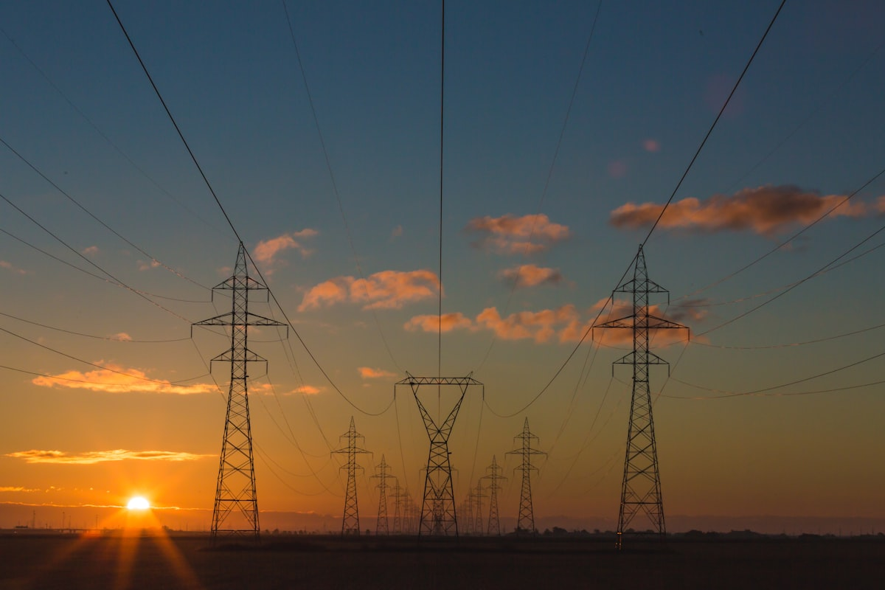

APPLICATION SECTORS
以行业需求组织应用，以具体工艺建立技术路径。
从酒类醇化出发，连接风味、质构与液体食品的处理过程。
聚焦切削液，延伸至涂装前处理、工业清洗与多相液体工艺。
从工业循环水到水资源回用，关注水质、运行与处理过程。
从多相配方到细腻质构，探索乳化、分散与水合的应用空间。
面向液体制剂、活性成分与生物材料的前沿研究方向。

关注反应、燃料、热管理与矿物浆料中的流体处理问题。
按技术、行业或工艺查找

 Tomado Fluid旋 风 流 体 科 技
Tomado Fluid旋 风 流 体 科 技